Producimos huevos en Chillán y los llevamos al centro de la ciudad, a Emporio Sabroso. También los repartimos a Santiago, Temuco, Concepción, Talca y comunas aledañas.
Somos Avícola El Huevo Sabroso. Trabajamos en el sector Oro Verde, en las afueras de Chillán. Ahí están nuestros pabellones, y de ahí sale cada huevo que vendemos.
Nuestro huevo es sano, rico y natural.
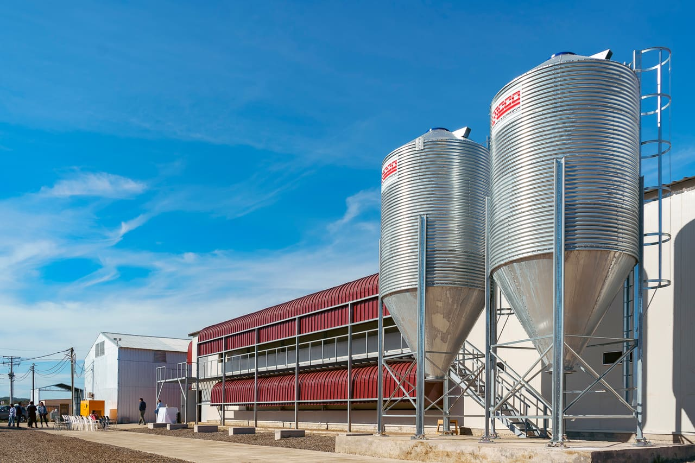
Nuestro pabellón nuevo y sus silos.
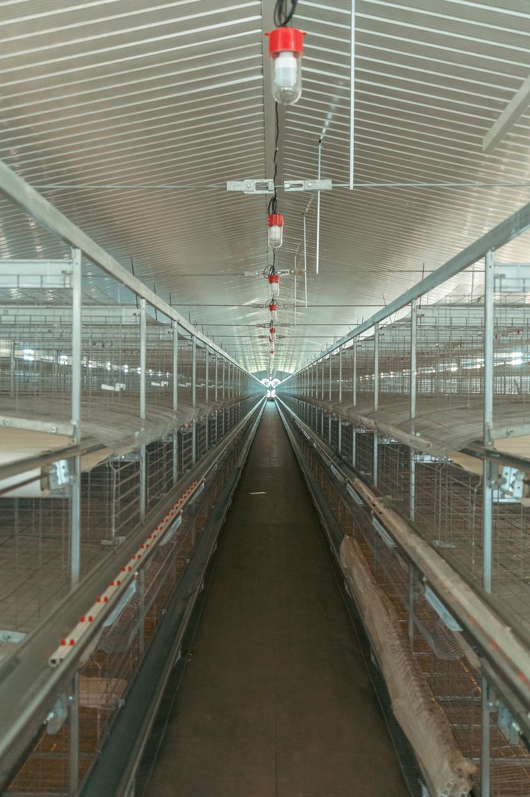
Por dentro de un pabellón.
El huevo
Blanco, café o azul
Vendemos huevo blanco y huevo café, por bandeja y por caja. Y ahora también huevo azul, de nuestra nueva raza de gallinas Novogen.
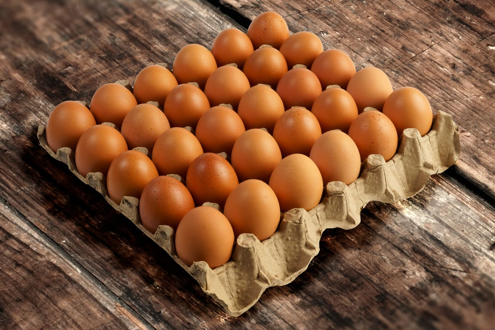
Huevo café, por bandeja.
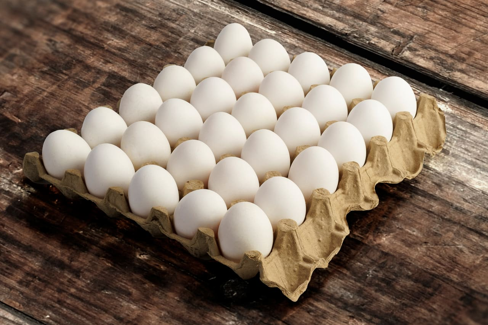
Huevo blanco, por bandeja.
Qué hacemos
Más que huevos
Además del huevo, en la avícola trabajamos en esto:
Huevos
Blancos, café y azules, del pabellón a tu mesa.
Pollitas
Comercializamos pollitas para quienes crían.
Alimentos
Alimentos terminados para aves.
Insumos avícolas
Lo que necesita un gallinero.
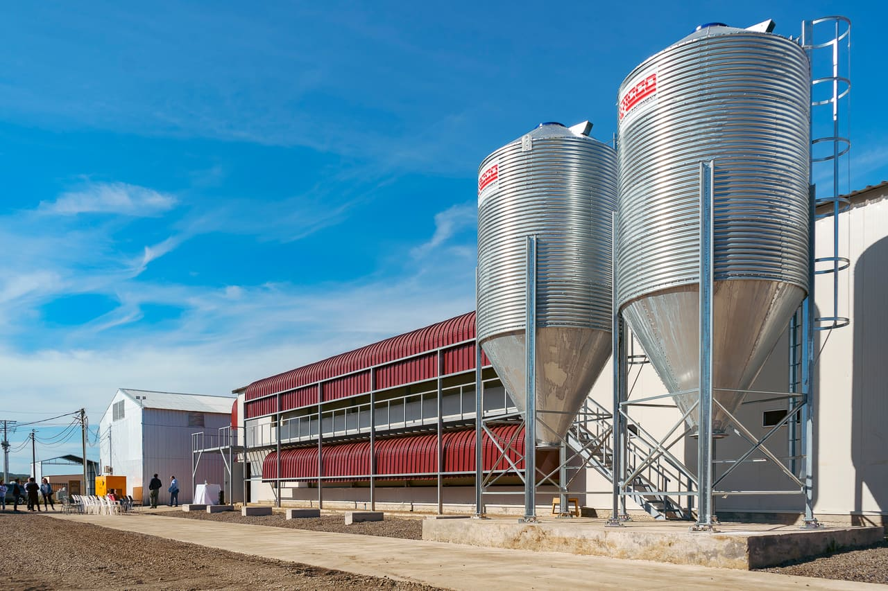
Los silos del alimento.
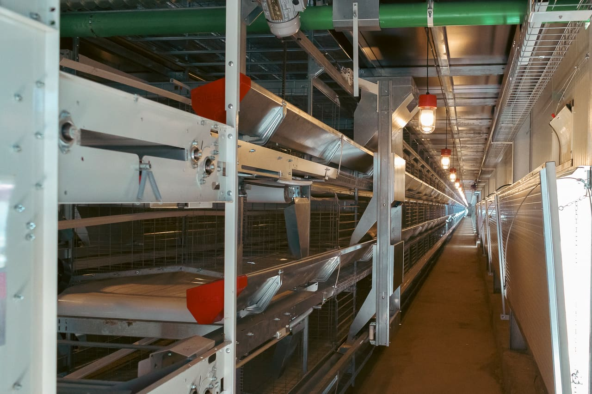
Jaulas, comederos y la cinta de los huevos.
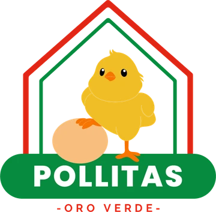
Pollitas Oro Verde
Pollitas listas para tu gallinero
Criamos pollitas desde su primer día de vida hasta que pueden irse contigo.
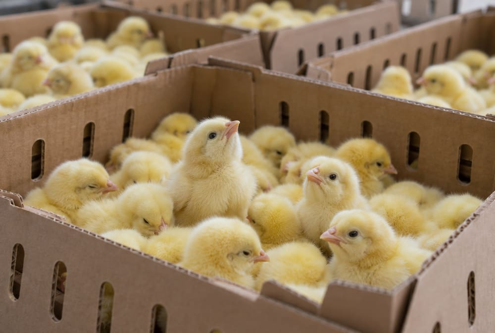
Día 1
Llegan con 1 día de vida
Las recibimos recién nacidas y las cuidamos desde su llegada.
Vacunas
Con su calendario de vacunas
Cada pollita cumple con el calendario de vacunación.
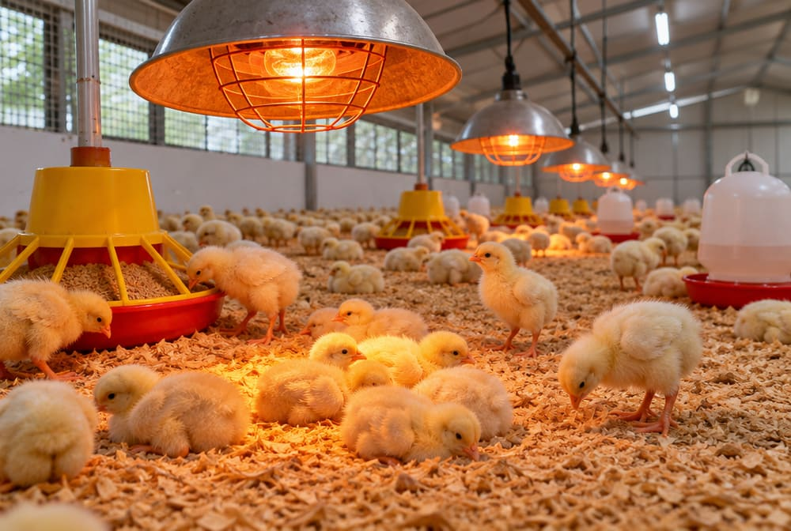
En el pabellón
A la temperatura ideal para su edad
Dentro del pabellón están siempre a la temperatura que necesitan según cuántos días tienen.
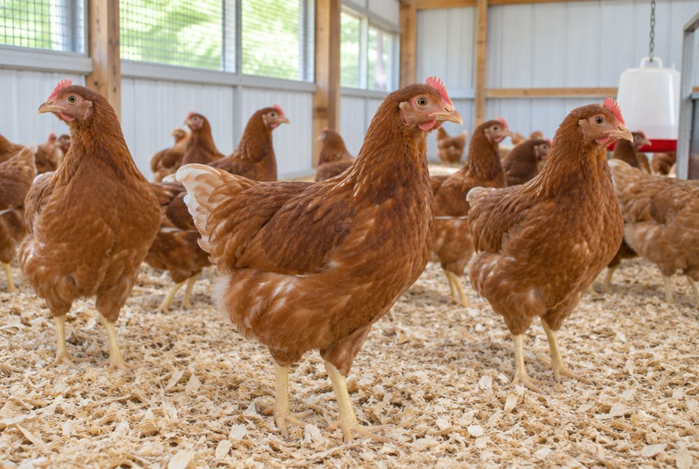
Semana 14
Listas para retirar
A la semana 14 ya pueden ser retiradas.
¿Quieres comprar pollitas? Escríbenos al número de crianzas o búscanos en Instagram.
En la avícola fabricamos el alimento de nuestras aves. Ahora estamos levantando una fábrica nueva, con silos para guardar la materia prima y una fábrica de premix.
Silos nuevosMateria prima segura y libre de humedad.
Fábrica de premixParte de la planta nueva.
10 toneladas por horaHacia allá estamos avanzando.
¿Quieres comprar alimento? Llama a la Distribuidora Santa Bárbara. Si es una compra muy grande, habla directo con la avícola.
Las materias primas caen a la mezcladora, se revuelven hasta quedar parejas y el alimento listo cae al saco.
Primero, lo macroLos granos y harinas: maíz, soya y afrechillo.Van primero porque son la mayor parte del alimento: el maíz aporta energía, la soya proteína y el afrechillo fibra. Se pesan según la receta y forman la base de la mezcla.
Luego, lo microLas vitaminas y minerales: el premix.Van en muy poca cantidad, por eso se agregan sobre la base ya cargada: así se reparten en todo el batch y cada saco lleva la misma dosis.
El batch revuelveLa mezcladora gira sin parar.Revuelve el tiempo que indica la receta, hasta que no quedan zonas con más de un ingrediente que de otro. Una mezcla pareja asegura que cada gallina coma lo mismo.
Al sacoEl alimento mezclado cae al saco.Con la mezcla pareja se abre la compuerta: el alimento cae al saco, se pesa (sacos de 25 kilos) y se cierra, listo para despachar.
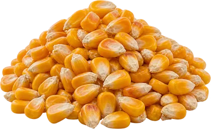
Maíz macro
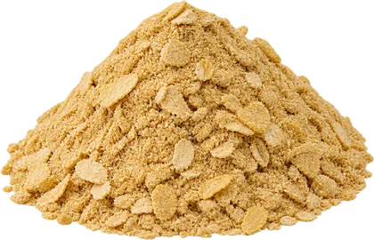
Soya macro
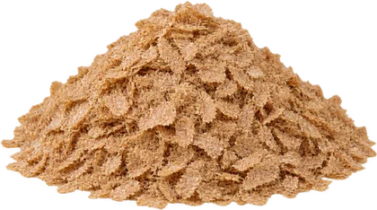
Afrechillo macroPremix micro
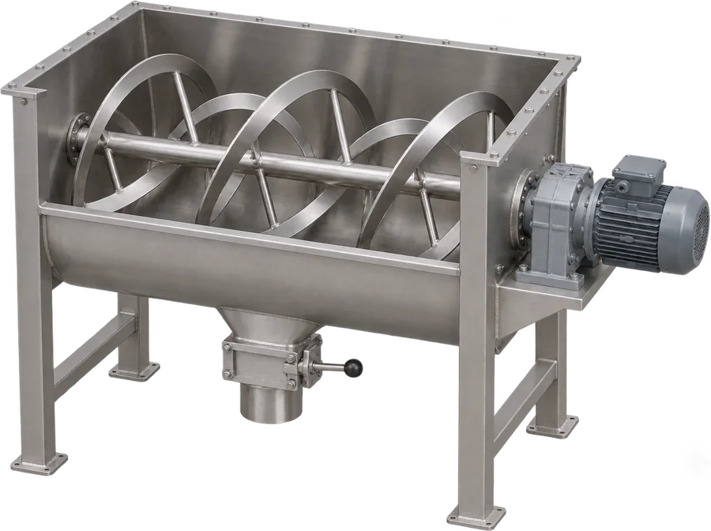
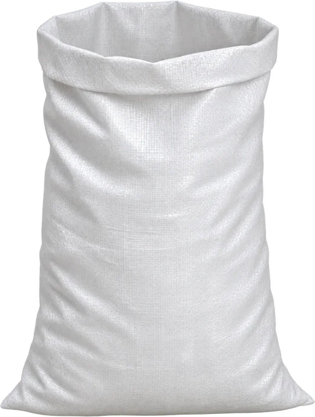
Avícola El Huevo SabrosoSano, rico y natural.
El viaje del huevo
Sigue bajando: el camión sale de la avícola en la mañana y llega al Emporio de noche.
MañanaSale de la avícolaAvícola El Huevo Sabroso.
DíaPasa por Oro VerdePor los caminos del sector, hacia Chillán.
TardeDistribuidora Santa BárbaraCocharcas 884, Chillán.
NocheLlega al EmporioArturo Prat 720, con las luces encendidas.
Lo mejor del campo para tu familia
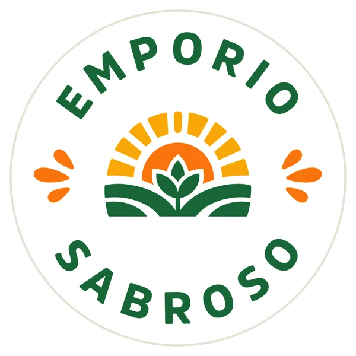
Nuestro local en el centro de Chillán
Huevos, abarrotes, envases y desechables. Compra por unidad, por paquete o por mayor.
Para los que no se saltan el día de pierna: una bandeja de huevos y una Monster Ultra, la blanca sin azúcar, juntas.
Consulta el precio y la disponibilidad en el local o por WhatsApp. La bebida energética no se recomienda para menores de 18 años, embarazadas ni personas sensibles a la cafeína.